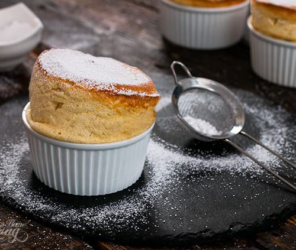

Souffle!!!!!!

Ingredient
- Yolk 5 eggs
- Egg White 5 eggs
- Fresh Milk 225 g
- Salt 1/2 teaspoon
- Cake Flour 25 g
- Granulated Sugar 15 g
- Vanilla 1 teaspoon
- Cream of Tartar 1 teaspoon
- Unsalted Butter ½ cup
- Icing Sugar ½ cup
Process
- Spread the butter into the cups. then coated with sugar.
- Place the cup in the refrigerator for about 20 minutes.
- Make an egg yolk mixture by boiling milk and fresh butter. Boil until the butter is completely melted.
- While boiling the milk, beat the egg yolks and granulated sugar until combined. Then sift the cake flour. then fold togetherWhile boiling the milk, beat the egg yolks and granulated sugar until combined. Then sift the cake flour. then fold together.
- Put it back into the buttermilk pot. Stir over low heat until the custard begins to thicken. Then turn off the stove, add the vanilla extract, stir well, remove from the mold, pour into a container and let it cool completely.
- Make the egg white mixture by beating the egg whites until they become frothy. Gradually add the sugar into the bowl, dividing it into 3 rounds, beating until the egg whites form medium peaks.
- Take about 1/3 of the egg white meringue and fold in the custard bowl until just combined. Then put the rest. then fold until combined.
- Scoop into the mold until the cup is full. Smooth the edge. Make a groove at the edge of the cup.
- Bake at 180 degrees Celsius, use top and bottom heat for 20-25 minutes.
- Finished, sprinkle with icing sugar before serving.
Nutrition Facts
| Nutrition Facts |
|
Serving : 4 |
|
| Amount per serving |
| Calories |
101 |
| |
% Daily Vale |
| Total Fat 3.6g |
5% |
| Saturated Fat 0.5g |
3% |